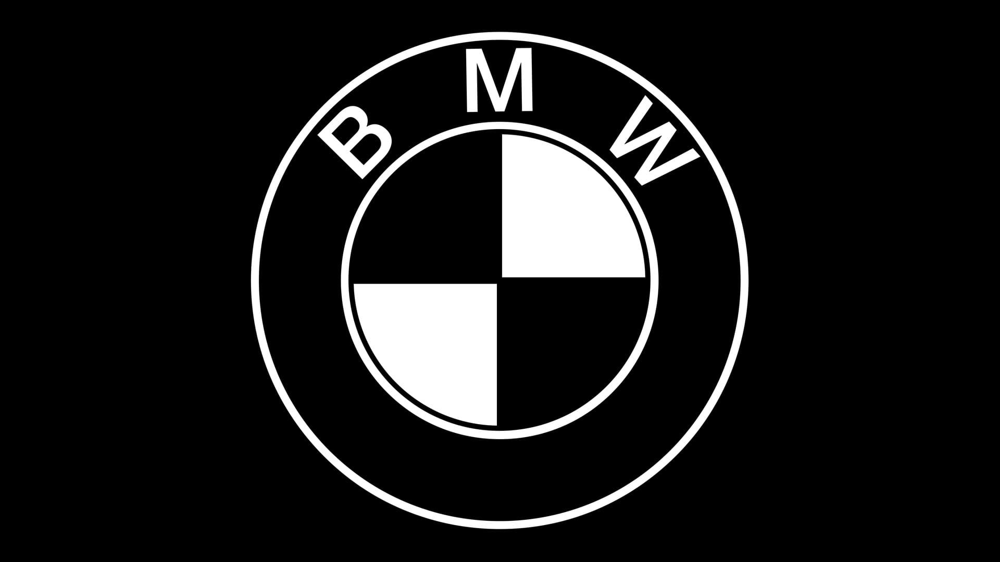

1972
Naissance de BMW Motorsport
Une petite division dédiée à la course voit le jour. Sa mission tient en un mot : gagner. Tout le reste en découlera.

Depuis 1972, trois bandes de couleur racontent la même histoire : celle de la compétition transposée sur la route.
Le mythe M
Au commencement, il y a la piste. Une poignée d'ingénieurs réunis pour gagner des courses, qui finissent par réinventer ce qu'une voiture de route peut être. « M » comme Motorsport — et comme une promesse jamais reniée : aucune ligne, aucun réglage, aucun compromis qui ne serve la conduite.
La signature
Le bleu clair pour BMW et la Bavière. Le rouge pour l'esprit course. Et le bleu nuit qui relie les deux. Depuis plus de cinquante ans, cette bande tricolore habille les modèles les plus désirables de la marque — un sceau que l'on reconnaît avant même de lire le badge.
L'héritage
Une petite division dédiée à la course voit le jour. Sa mission tient en un mot : gagner. Tout le reste en découlera.
La première M de route. Silhouette dessinée par Giugiaro, moteur six-cylindres en position centrale : une supercar née d'un programme de compétition.
Conçue pour homologuer une voiture de tourisme, elle deviendra l'une des plus victorieuses de l'histoire en compétition. La légende M est lancée.
L'héritage course, sur route ouverte. Trois caractères, une même obsession — et ce sont précisément celles que tu peux composer ici.
L'esprit M
Des moteurs hauts en régime, taillés pour délivrer leur énergie encore et encore, sans faiblir.
Châssis, direction, freins : chaque réglage affûté sur les circuits les plus exigeants du monde.
Plus qu'une mécanique : un état d'esprit, partagé par celles et ceux qui prennent le volant.
Compose ta M, mesure ses chronos, défie une rivale.